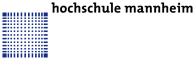

|
|
Ein Verteiltes System ist ein Zusammenschluss mehrerer unabhängiger Computer, die über ein Netzwerk miteinander kommunizieren. Es existieren verschiedene Architekturen verteilter Systeme in der Informatik. Neben der bekannten Architektur, dem Client-Server-Modell, existieren ganz besonders im Umfeld des Parallelrechnens u.a. Cluster-Computing, Grid-Computing, Peer-to-Peer (P2P) und Cloud-Computing.
Cloud-Computing hat das Potential, den Charakter der Informationstechnik (IT) fundamental zu verändern. Die Konsolidierung der Rechen- und Speicherressourcen in großen Rechen- bzw. Ressourcenzentren bietet die Möglichkeit, Mittel, die bisher der Aufrechterhaltung des Ressourcenbetriebs dienten, in andere Aufgaben fließen zu lassen. Gleichzeitig haben die Anwender in der Cloud große Freiheiten bzgl. der Infrastrukturen, Betriebssysteme, Programmiersprachen und Anwendungen, die sie verwenden möchten.
Das Ziel dieser Vorlesung ist die Vermittlung der Grundlagen von Cluster-Computing, Grid-Computing, Peer-to-Peer (P2P) und ganz besonders von Cloud-Computing. Praktische Übungen nehmen in der Vorlesung einen großen Raum ein und sind für das Verständnis der Technologien elementar.
|
Aktualisierte und verbesserte Vorlesungsunterlagen befinden sich auf der Seite Cluster-, Grid- und Cloud-Computing im WS1011. |
| Vorlesung | Freitags | 9:45 - 11:15 Uhr | Raum 01/212 |
| Übung | Freitags | 8:00 - 9:30 Uhr | Raum 01/008 |
| Klausur | 15.7.2010 | 10.45 - 12.45 Uhr | Raum 01/211 |
| (16.03.2010) | Vorlesungsbeginn | |
| 1.Vorlesung | (19.03.2010) | Einführung, Client-Server |
| 2.Vorlesung | (26.03.2010) | Parallelrechner |
| (02.04.2010) | Vorlesungsfreie Zeit und Karfreitag | |
| (09.04.2010) | Vorlesungsfreie Zeit | |
| 3.Vorlesung | (16.04.2010) | Cloud-Computing |
| 4.Vorlesung | (23.04.2010) | Amazon Web-Services (EC2, S3, EBS) |
| 5.Vorlesung | (30.04.2010) | PaaS (Google App Engine) |
| 6.Vorlesung | (07.05.2010) | Private Cloud IaaS (Eucalyptus) und Private Cloud PaaS (AppScale) |
| 7.Vorlesung | (07.05.2010) | Cluster-Computing |
| (14.04.2010) | Brückentag nach Christi Himmelfahrt | |
| 8.Vorlesung | (21.05.2010) | Grid-Computing |
| 9.Vorlesung | (28.05.2010) | Peer-to-Peer |
| 10.Vorlesung | (11.06.2010) | Virtualisierung |
| 11.Vorlesung | (18.06.2010) | Gastvorlesung von Dr. Marcel Kunze (SCC/KIT) zum Thema MapReduce/Hadoop |
| 12.Vorlesung | (23.06.2010) | Gastvorlesung von Dr. Andreas Eberhart (fluid Operations) u.a. zum Thema Landscape as a Service. [Abstract] |
| 13.Vorlesung | (25.06.2010) | Fragestunde |
| (02.07.2010) | Vorlesungsende |
| Übungsblatt 1 |
| Übungsblatt 2 |
| Übungsblatt 3 |
| Übungsblatt 4 |
| Übungsblatt 5 |
| Übungsblatt 6 |
| Übungsblatt 7 |
| Abschlussklausur | (15.07.2010) | Bearbeitungszeit: 60 Minuten | ||
| Lösungsvorschlag | (15.07.2010) | Lösungsvorschlag zu Abschlussklausur | ||
| Ergebnis der Klausur |
| Ergebnis der Vorlesungsevaluierung |
Zu erreichen bin ich am besten per E-Mail: cray@unix-ag.uni-kl.de
|
M.Sc. Christian Baun Hochschule Mannheim Fakultät für Informatik Stand: 16.7.2010 |
|
 |